Management Station Schedules
Scene Editor
Allows you to configure scenes for a scheduler. Using scenes, you can create multiple operating modes for a schedule. You can add and associate data points with the scenes and specify the values for the data points for different scene modes such that when the schedule is in that particular mode at the specified time, the data point will reflect that value.
Configure Selected Data Points
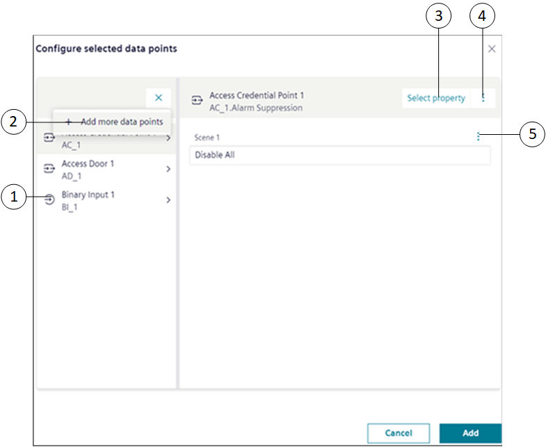
|
1 | Data points list | Displays the list of selected data points for a particular scene |
2 | Add more data points | Allows you to add data points to the current scene. |
3 | Select property | Allows you to select a different property of the data point. By default, when you add a data point to a scheduler, the Present Value property is set for the point. |
4 | | Provides the following options: |
5 | | Provides options to disable the data point for the scene and set advanced commands for the associated property. |
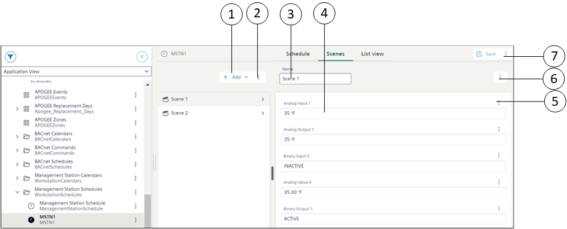
|
1 | Add | Allows you to add new scenes and data points to the scenes. |
2 | | Provides options to save scheduler, save scheduler with a new name, discard changes, and delete the scheduler. |
3 | Name | Displays the name of the scene. You can also modify the name. |
4 | Value | Displays the value of the data point associated with the scene and allows you to change its value. |
5 | | Provides the following options: |
6 | | Displays the following options:
|
7 | | Provides options to save scheduler, save scheduler with a new name and description, discard changes, and delete the scheduler. |

Recurrence settings
The Recurrence settings dialog box allows you to set the recurrence time for particular scene.
NOTE: The schedule does not continue recurrence overnight.
For example, If a scheduled entry includes recurrence at midnight, the system recalibrates at 12:00 AM. After recalibration, the recurrence continues only if a switchpoint entry for that scene configured for the next day at 12:00 AM. Otherwise, the recurrence stops for that scene, or the default scene continues it's recurrence, if it is active.

Item | Name | Description |
1 | Recurrence | Sets the recurrence status Active or Inactive. |
2 | Interval | Allows you to select the scene recurrence time. |
3 | hh and mm | Allows you to set the recurrence time in hours and minutes using |
4 | | Sets the configured scene recurrence time. |
 button.
button.Configure Data Point
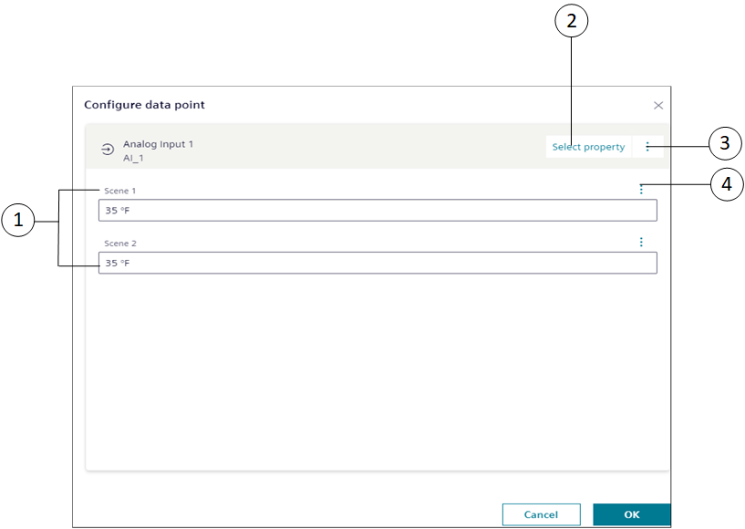
|
1 | Scene [n] | Displays the property value of the data point for a particular scene, for example, Scene 1 |
2 | Select property | Allows you to select a different property of the data point. By default, when you add a data point to a scheduler, the Present Value property is set for the point. |
3 | | Provides the following options: |
4 | | Provides options to disable the data point for the scene and set advanced commands for the associated property. |
Management Station Scheduler
You can create weekly scheduler for your management stations, and a management station can run multiple calendars or schedulers at the same time. Management station scheduler and calendars run only if the management station is running.
Management station scheduler make use of scenes that are objects which allow you to create multiple operating modes for a scheduler. You can add and associate data points with the scenes and specify the values for the data points for different scene modes such that when the scheduler is in that particular mode, the data point will reflect that value. For example, consider that you have created 3 scenes, Office Opening Time, Lunch Time, and Office Closing Time and you want to have different temperatures in each of the 3 scene modes. In this case, you can associate 3 analog output points to each of the scenes with values that should be present at each of the 3 scene modes.
Additionally, Management station scheduler can process both BACnet and non-BACnet object types (BACnet schedules process only BACnet object types).
You can also create exceptions to schedulers. When a management station exception is ON, it overrides the weekly scheduler.
When the exception is OFF, control returns to the weekly scheduler.
Schedulers Workspace – View Mode
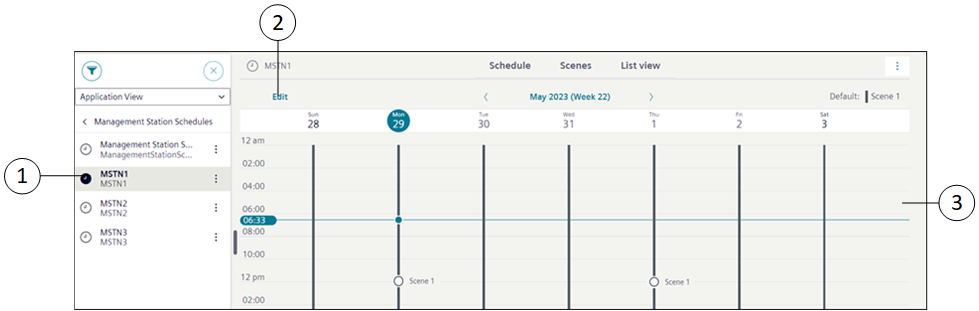
1 | System Browser | Displays the list of objects in the selected view. |
2 | Edit | Navigates to the Edit mode that allows you to edit scheduler entries and add exceptions. |
3 | Schedule Overview | Displays information of the scheduler entry and exception entry, of the selected scheduler. |
Schedulers Workspace – Edit Mode
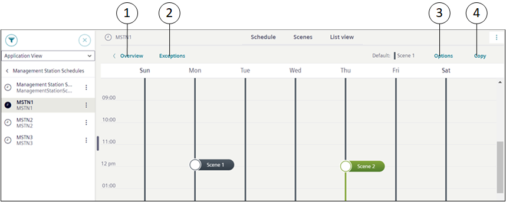
1 | Overview | Navigates to the scheduler workspace. On clicking Overview, you can navigate back to the Overview page where you can only view the scheduler or exception entries but cannot edit them. |
2 | Exceptions | Displays the Calendar view and List view from where you can add exceptions to the scheduler. |
3 | Options | Displays the Options dialog box from where you can specify the default scene and the effective period for the scheduler. |
4 | Copy | Enables copying of scheduler entries to other days of the week. |
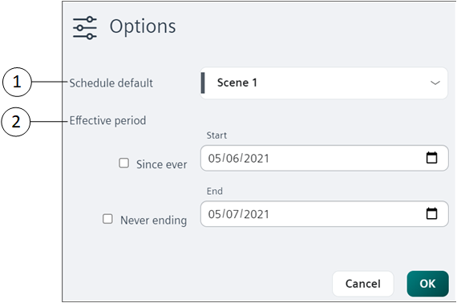
1 | Schedule default | Allows you to specify the default scene for the scheduler. |
2 | Effective period | Allows you to specify the start and end time period for a scheduler. |
Schedulers Workspace – Right Panel
In case of multiple scenes or exceptions, you can view the detailed properties of the current running scene or exception as well as the next scene or exception.
For detailed properties, navigate to right panel by clicking button and select the Properties drop-down list.
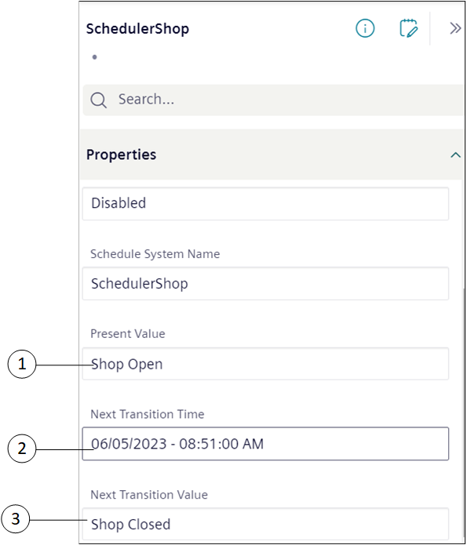
1 | Present value | Displays the selected scheduler entry. For example, if the selected scheduler entry is shop open, then Shop Open displays. NOTE: The present value is visible in the basic mode as well as advanced mode. |
2 | Next Transition Time | Displays the date and time of the next scheduler entry in the selected scheduler. For example, assume that the present value of scheduler is shop open and the next scheduler planned is shop closes at 6.00 pm, then the planned date and time of next scheduler is displayed. NOTE: The next transition time is visible in advanced mode. |
3 | Next Transition Value | Displays the value of the next scheduler entry in the selected scheduler. For example, assume that the present value of scheduler is shop open and the next scheduler planned is shop closes at 6.00 pm, then “Shop closed” value is displayed. NOTE: The next transition value is visible in advanced mode. |
Management Station Exceptions
You can define exceptions from the Calendar view or List view.
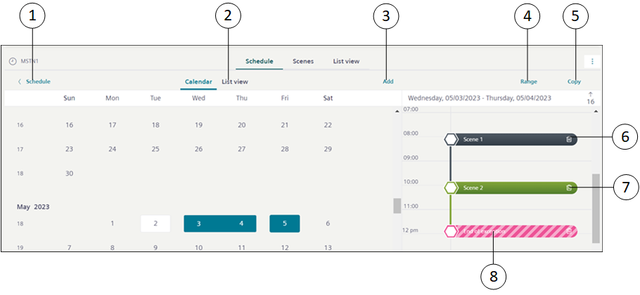
|
1 | Schedule | Navigates to the scheduler entries workspace. |
2 | List view | Displays the scheduler exception entries in the List view. |
3 | Add | Displays the list of exceptions that you can add to the scheduler. You can add the following types of exceptions: |
4 | Range | Allows you to convert an exception entry of type Date to Date range. |
5 | Copy | Allows you to copy scheduler exception entries to other days of the week. |
6 | Exception Entry | Displays the details of the scheduler exception entry. |
7 | Delete Exception Entry | Allows you to delete a scheduler exception entry. |
8 | End of exception | Displays the end of exception. If the End of exception option is selected for a scheduler exception entry, then the scheduler falls back to the weekly scheduler defined for that period. |
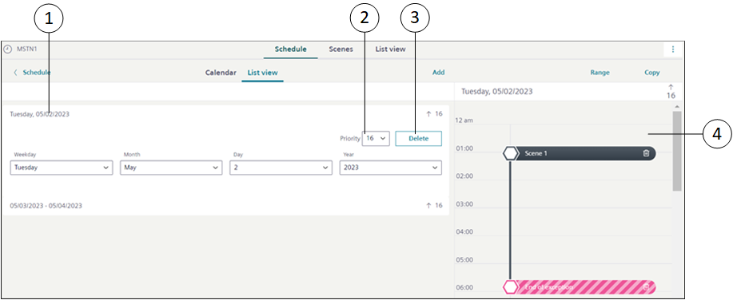
|
1 | Exception Entry | Displays the details of the scheduler exception entry. |
2 | Priority | Allows you to change the priority of the exception entry. By default, the priority is set to 16. |
3 | Delete | Allows you to delete a scheduler exception entry. |
4 | Profile | Displays the selected exception entry. |
Calendar Exception
If the Management station calendar is added as an exception, the entries of the calendar are considered to be exception entries for the scheduler.
|
1 | Open calendar | Navigates you to the Secondary pane and displays details of the calendar. |
2 | Profile | Navigates you to the Profile view. |
3 | Calendar | Displays the details of the calendar entry. |
Management Station Calendars
You can create Management station calendars and add entries in the Calendar view and List view.
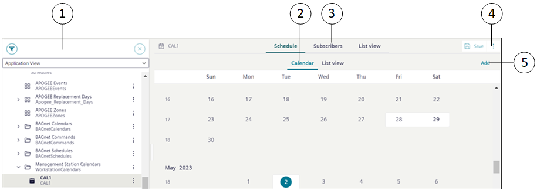
1 | System Browser | Displays the list of objects in the selected view. |
2 | Calendar object (workspace) | Displays the Management station calendar object in the Calendar view or List view. |
3 | Subscriber (workspace) | Displays the subscribers added to a calendar object. |
4 | | Displays the following options: Save as: Saves the Management station calendar with a new name. |
5 | Add | Allows you to add calendar entries of the following types: Date: Adds a calendar entry for a single day. |
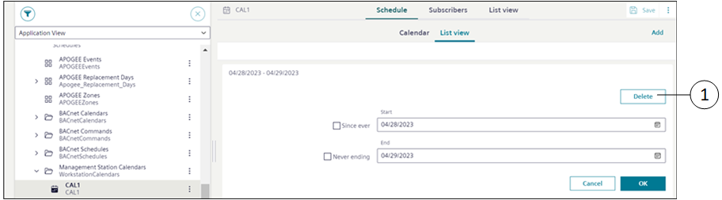
1 | Delete | Deletes the calendar entry. |
Subscribers Workspace
The Subscribers workspace allows you to add multiple remote calendars present in different devices and Management station calendars of partner systems to the current calendar. These remote calendars and Management station calendars of partner systems are termed as subscribers of the current calendar. This ensures that any changes made in the current calendar are applicable to all the subscribed remote calendars and Management station calendars of partner systems.
For example, assume that you have created a calendar, CAL1 with a list of all the common holidays and you want to have these common holidays in other calendars (CAL4 from device 1, CAL4 from device 2, CAL2 from System1 and CAL2 from System2) as well. In this case, you must add the CAL4 calendars as remote calendars and CAL2 from System1 and System2 in the Subscribers workspace and sync these calendars with the current calendar (CAL1).
For more information, see Add Subscribers to Management Station Calendar in Creating a Management Station Calendar.
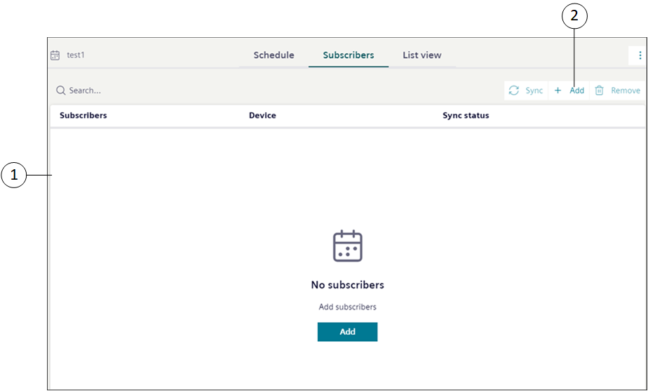
1 | Subscribers workspace | Allows you to add multiple remote calendars from different devices and Management station calendars from partner systems to the current calendar. |
2 | Add | Displays the Add Subscriber to [calendar object] dialog box and adds the remote calendars from devices and Management station calendars from the partner systems to the current calendar. |
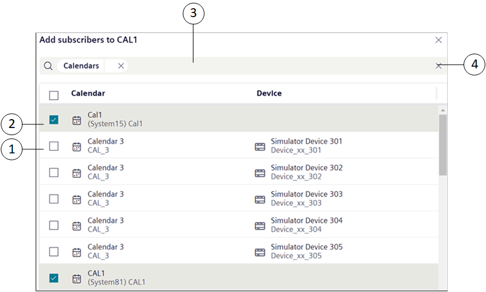
1 | Remote Calendars | Displays the remote calendars from different devices. NOTE: If the remote calendar object is subscribed to other Management station calendar, then the object is not visible in the remote calendar list. Only one remote calendar object is allowed as a subscriber per device. |
2 | Management station calendars | Displays the Management station calendars from partner systems. NOTE: If the Management station calendar from the partner system is subscribed to other Management station calendar, then the Management station calendar from the partner system is not visible in the calendar list. Only one Management station calendar is allowed as a subscriber per partner system. |
3 | Search bar | If remote calendars from different devices and Management station calendars from partner systems in a distributed environment are displayed in the list, then it allows you to search the displayed options based on calendars, devices, or systems. |
4 | | Clears the search option. |
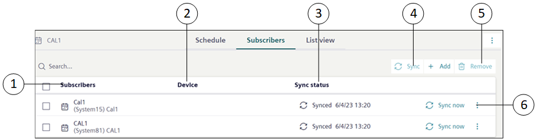
1 | Subscribers | Displays the list of remote calendars of devices and Management station calendars of partner systems that are added as subscribers. |
2 | Device | Displays the device of the remote calendar. |
3 | Sync status | Displays the synchronization status of the remote calendars of devices and Management station calendars of the partner systems. Calendar synchronization starts automatically in the following situations:
|
4 | Sync | Enables manual synchronization of the Subscribers, if the automatic synchronization has failed. For remote calendars, synchronization fails in the following situations:
For Management station calendars of partner systems synchronization fails when the partner system is disconnected. |
5 | Remove | Removes the subscribed remote calendars and Management station calendars of partner systems from the subscription list. |
6 | | Displays the option Remove subscriber that allows you to remove the selected subscriber. |
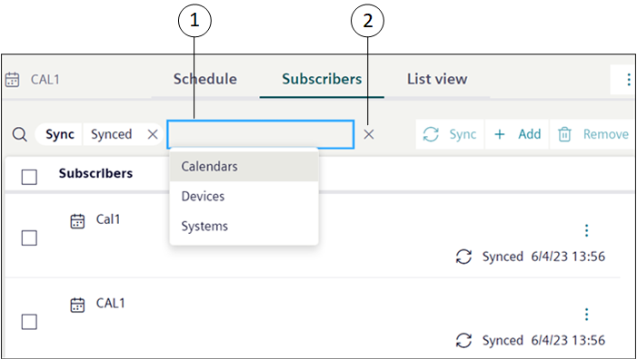
1 | Search Bar | Allows you to search the remote calendars from devices and Management station calendars from partner systems in the following criteria:
|
2 | | Clears the filter option. |
Validation in Management Station Schedules and Calendars
When you set Management Station Schedules and Calendars target object with Validation profile = Enabled, Monitored or Supervised combined with the Four Eyes check box option then you are prompted to validate the actions performed to the target object.
Some examples of the performed actions are: Add, Modify, Delete, Save, Copy Paste.
When the object is modified or updated, all the changes are logged into the Audit Trail log of the validated object and the object version increments are recorded and stored under the right panel, in the History tab.
NOTE: Users with OIDC or software accounts are not allowed to validate Management Station Schedules and Calendar objects.
The following table displays applicable Management Station Schedules and Calendars target objects with their respective actions:
Validation Profile Target Objects | Action | Validation Output |
Management station scheduler |
| On saving the changes, Validation required dialog box with corresponding input field is displayed based on the Validation profile. |
Management station calendar |
| |
Management Station Scene and data point |
| |
Management station scheduler exception |
|
Following table displays some more scenarios where multiple objects are validated and their corresponding validation output:
# | Scenarios for Management station scheduler | Validation Output | |
1 | Management station scheduler is not validated | Commanded Output (Scene Object and/or data point) is not validated | Validation required dialog box is not displayed. |
Commanded Output (Scene Object and/or data point) is validated | On modification of Management station scheduler for Weekly Entries, Exception Entries, or parameters under the Options dialog box, Validation required dialog box with highest Validation profile is displayed. | ||
2 | Management station scheduler is validated | Commanded Output (Scene Object and/or data point) is not validated | On modification of Management station scheduler for Weekly Entries, Exception Entries, or parameters under the Options dialog box, Validation required dialog box with highest Validation profile is displayed. |
One of the commanded outputs (Scene Object and/or data point) is validated | On modification of Management station scheduler for Weekly Entries, Exception Entries, or parameters under the Options dialog box, Validation required dialog box with highest Validation profile is displayed. | ||
# | Scenarios for Management station calendar | Validation Output |
1 | Management station calendar is not validated | Validation required dialog box is not displayed. |
2 | Management station calendar is validated | On modification of Management station calendar exception entries Validation required dialog box with the highest Validation profile is displayed. |
NOTE: Similar validation configuration is also applied to subsystems like APOGEE P2, SICLIMAT, and so on.
In the case of migrated schedule objects if the validation profile is enabled then:
NOTE 1: The migrated schedule objects in the Flex Client have the same validation profile as the Install Client.
NOTE 2: If the migrated schedule objects are modified in Flex Client, such modification cannot be restored back to Install Client.